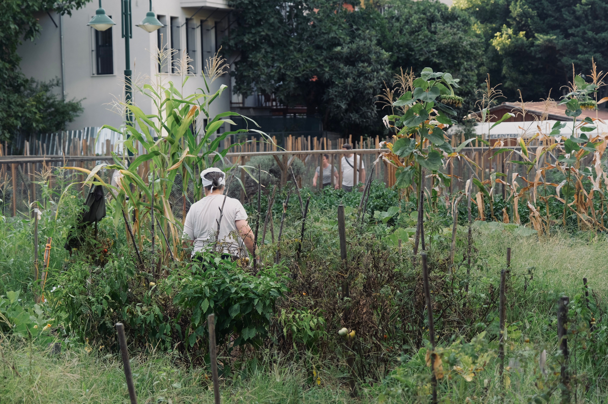

Nuevo taller de fotografía urbana
Un recorrido práctico para observar y registrar el barrio.
Leer noticia sobre el tallerActualidad
Conoce las últimas actividades y novedades de Conecta Cultura.
Un recorrido práctico para observar y registrar el barrio.
Leer noticia sobre el taller
Una actividad para aprender técnicas de cultivo y fortalecer el trabajo colaborativo entre vecinos.
Leer noticia sobre la jornada
Una actividad introductoria para comenzar a desarrollar habilidades de programación.
Conocer la actividad